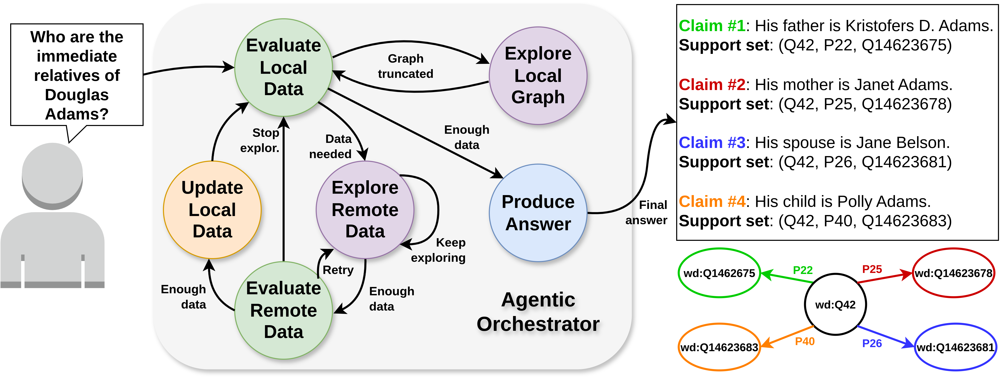

The KGQA agentic framework follows the DIKW architecture. The "Data + Information" layer is implemented as a knowledge graph. The "Knowledge" layer consists of a LLM-based orchestrator, using tools to inspect local and remote data. The "wisdom" layer provides feedback on the QA strategy.
Abstract
Large Language Models (LLMs) have revolutionized Natural Language Processing (NLP), simplifying knowledge extraction from structured and unstructured sources. Despite pervasive usage in various applications, from Question Answering (QA) to goal-driven reasoning, they tend to produce hallucinations, factually incorrect responses that hindering accuracy and explainability of Knowledge-Based QA (KBQA) tasks.
To address this limitation, we introduce RoboData, an Agentic AI approach to verifiable knowledge extraction and reasoning over structured ontologies like Wikidata. Through metacognitive self-reflection and goal-directed commonsense reasoning, a LLM-based epistemic agent dynamically self-orchestrates a query answering process. Unlike traditional information retrieval systems, the proposed architecture incrementally builds a local knowledge graph from remote knowledge sources to answer a natural language query with traceable facts, highlighting a "support set" for each claim, a set of nodes and edges in the local knowledge graph that backs the generated claims. The resulting accumulated knowledge provides an intermediate explainability layer, providing a reliable epistemic substrate for using trusted ontologies in goal-driven query answering applications, such as robotic planning and semantic map enrichment.
Contributions
We present an architecture where a Large Language Model-based agent orchestrates a Query Answering process. This process produces both a local Knowledge Graph, built from remote reliable data sources like Wikidata, and a natural language answer. Crucially, each claim in the answer is supported by "support sets"—subsets of the local KG that provide verifiable evidence, enhancing the trustability of the output.
Our system features an agent capable of reasoning through self-reflection on its past actions. It can dynamically correct its strategy by analyzing its own course of action. This metacognitive capability allows the agent to adapt its exploration strategy, overcome the limitations of LLM context windows, and manage long-term memory more effectively, which is particularly useful for complex, multi-hop queries.
Methodology
The system is designed to self-orchestrate, exploring the remote Wikidata ontology or the local KG, or to update it, progressively constructing the local graph, enabling explainable query resolution. Through self-reflection and metacognition, the agent is capable of correcting its own strategy, by reasoning on the past execution. The framework is organized in layers, following the DIKW paradigm.
Epistemic Substrate: Acting as the Data+Information layer in the DIKW taxonomy, the accumulated local graph, initially empty, is progressively populated during the Query Answering. The local KG represents data using a common schema, to potentially accomodate multiple remote knowledge sources.
Agentic Layer: Acts as the main operational component, representing the Knowledge layer in the DIKW paradigm. This layer comprises several modules. The main one is the Agentic Orchestrator, modeled as a Finite-State Machine (FSM), managing how the Agent interacts with the LLM. Each state has a specific prompt and set of tools that the agent can use.
Metacognition: FSM-based orchestration balances freedom of agentic action with guidance over reasoning paths. Hallucinations induced by excessive context lengths are mitigated by a corrective strategy generated by the metacognition module and embedded in subsequent Orchestrator prompts.
Stateful Orchestrator

Initially, the query is evaluated in Local Data Evaluation and the KG is empty: the orchestrator transitions to Remote Data Evaluation. Here, the proper tool calls are executed. Remote data is evaluated in Remote Data Evaluation. Then the self-orchestration determines the remaining steps. In the orchestrator, the agent dynamically determines the order in which states are visited and tools are called and performs self-reflection, by observing previous successes or failures or evaluating data completeness. Workflows are replaced with a dynamic transition system, as the state sequence is therefore determined by the commonsense reasoning capabilities of the LLM. The orchestrator is allowed to run a predefined number of turns, after which it is forced to produce an answer.
Local Data Evaluation: Evaluates whether the local knowledge graph contains enough information to answer the query. If the graph is empty, the system proceeds directly to the Remote Exploration state. If there is enough data to answer the original query, the orchestrator visits the Produce Answer state. Finally, if the local KG contents exceed the maximum allowed token count, the Local Graph Exploration is visited.
System Prompt: Evaluate if the local graph data is enough to answer the query. [Exploration strategy suggestions]. If you feel that key relationships are missing from the local graph, you can suggest using remote tools to gather more data and go back to remote exploration. [List of possible transitions]. [Invitation to keep KG topologically consistent].[Invitation to self-reflection].
Assistant Prompt: Self-reflection, memory context, local graph data, local exploration results, and optional metacognitive strategy.
Local Graph Exploration: The agent uses tools to explore the local KG, gathering additional information relevant to the query but not initially visible in the truncated graph. The agent can choose to transition again to the Local Data Evaluation state or to keep exploring.
System Prompt: Explore the local knowledge graph to answer the query. Use available tools to find relevant information. Avoid redundancy. [List of possible transitions]. [Invitation to self-reflection]
Assistant Prompt: Self-reflection, memory context, local graph data, and local exploration results.
Tools:
get_node: retrieve node details by ID
get_edge: retrieve edge details by ID
cypher_query: execute Cypher queries on graph database
Remote Data Exploration: The agent can invoke tools to collect data from the remote ontology. It can then decide to transition to the Local Data Evaluation state or to keep exploring.
System Prompt: The local graph is insufficient. Use remote tools to gather relevant data that fills gaps. Focus on entities/relationships related to the query. [List of possible transitions]
Assistant Prompt: Self-reflection, memory context, and local graph data.
Tools:
get_entity_info: retrieve detailed information for a Wikidata entity
get_property_info: retrieve detailed information for a Wikidata property
search_entities: search for Wikidata entities by name or alias
sparql_query: execute SPARQL queries on the Wikidata endpoint
explore_entity_neighbors: retrieve all neighbors for a given Wikidata entity
build_local_graph: add a subgraph from remote data to the local KG
Remote Data Evaluation: The relevance of remote retrieved information to the original query is evaluated. If the data is considered relevant, the system transitions Local Graph Update state to integrate it into the local KG. Otherwise, the system can decide whether to keep exploring or go back to the Local Data Evaluation state.
System Prompt: Evaluate if remote data is relevant for building a knowledge graph for the query. [List of possible transitions]. [Invitation to self-reflection].
Assistant Prompt: Previous thoughts, local graph data, remote graph data, memory context, and optional metacognitive strategy.
Local Graph Update: The selected remote entities and relations related to the query are fetched into the local graph, then the agent transitions back to the Local Data Evaluation state.
System Prompt: Update the local graph with relevant remote data. Only add entities/relationships directly related to the query. Avoid isolated nodes and redundancy. [Update strategy suggestions]. [Invitation to keep KG topologically consistent].
Assistant Prompt: Self-reflection, local graph data, remote graph data, and memory context.
Tools:
fetch_node: add a single node from remote data to the local KG
fetch_relationship_[to|from]_node: add a relationship and its corresponding node to the local KG
Answer Production: Final state, where the agent generates an answer. Each sentence is associated to a set of entities and relations in the local data, acting as proof for that claim.
System Prompt: You are an expert agent that produces comprehensive answers using data from a local knowledge graph. Your task is to create a final answer where each sentence is backed by specific evidence from the local graph. [Detailed format and consistency constraints]. [Format example].
Assistant Prompt: Self-reflection, local graph data, and memory context.
Metacognition
FSM-based orchestration balances freedom of agentic action with guidance over reasoning paths. Hallucinations induced by excessive context lengths, due to the need to provide the KG to the LLM in data-related prompts, increase with complex queries requiring long answers and big underlying knowledge graphs. As a mitigation, a corrective strategy is generated by the metacognition module and embedded in subsequent Orchestrator prompts. The metacognition happens in evaluation states at two distinct levels: the first one is performed inline in the orchestrator. A self-reflection behavior in the LLM is elicited, by instructing the Agent to reflect on the past execution trace to determine corrective advices for the next selected state in the orchestrator, with the desired outcome of correcting the short-term strategy in reaction to failures or stagnation in the query answering process. Then, each time the agent reaches an evaluation state, in the ”Wisdom” layer, explicit metacognition is performed to provide a higher-order strategic evaluation of the overall agentic strategy, by analyzing the sequence of past states, tool calls and graph updates. If a previous metacognitive observation is available, the inferred strategy is compared against it. The module finally produces a metacognitive observation, a corrective plan to optimize suboptimal tendencies in the agent strategy. This observation is then injected into the prompts of the orchestrator evaluation states. As turns run out, a variable ”turn urgency” message (depending on how many orchestrator turn are left), urges the LLM to consolidate the KG, avoiding isolated nodes and unconnected components, leading to a better consistency in output KGs.
Metacognition components:
Strategic Assessment. Infer the current strategy from statistics and memory.
System Prompt: Analyze the sequence of actions and identify the underlying strategic approach. Focus on: high-level strategy, tool usage preferences, data retrieval patterns, knowledge graph construction strategy, and performance indicators. Turn urgency.
Assistant Prompt: Action sequence, execution statistics (state and graph statistics, tool usage), available tools, memory context, local graph data, local/remote exploration results.
Meta-Observation. The strategy is compared to previous ones, and corrective feedback is generated, enabling the agent to navigate complex queries and reorient sub-optimal behavior.
System Prompt: Evaluate current strategy against task outcome and previous observations. Consider: strategy coherence, performance assessment, strategic continuity, opportunity identification, and tool optimization. Turn urgency.
Assistant Prompt: Detected strategy, previous metacognition, task outcome assessment, available tools, memory context, local graph data, local/remote exploration results.
Experimental Evaluation
This section evaluates the proposed system across varying query complexity and ambiguity. By default, metacognition is disabled while self-reflection is enabled, as it is an established practice in the current state of the art. Experiments are conducted using GPT-4o as a Reasoning Model. The orchestrator is allowed to run for a limited number of turns, after which it is forced to produce an answer with the collected data. The only remote ontology used in these experiments is Wikidata, accessed through the official API.
In the first batch of queries, Batch A (A1-A7), we test RoboData on a curated set of single and multi-hop queries, at an increasing level of complexity and scope, to assess its basic KGQA capabilities. The results are reported in Table 1, containing for each experiment, the original query, the answer with its supporting set, and several statistics, including number of iterations and tool calls, exchanged tokens and execution time, number of nodes and edges added. In this batch, we allow the orchestrator to run for at most 30 turns. Queries A1-A4 assess the Question Answering capability of this system at an increasing level of complexity. In particular, A1-A3 require a single hop to answer correctly (basically a local exploration around the entity Q42 in Wikidata as all the required elements for the answer are located one relation away from the main subject of the question). A2 and A3 though require multiple relations to answer and A2 is contained in A3. The result shows consistency in the intersection of the answers to A2 and A3. The answer to A3 is only partial: the part of the answer in common with A2 is only partially found; therefore, the answer is considered wrong. Query A4 instead requires multiple hops to answer correctly, showing longer-term task execution capabilities. Queries A5-A7 are more complex both in the number of hops required and in scope. A5 requires a chain of 4 hops to answer but only 3 are found: this is due to the fact that all entities along the chain contain part of the answer already in the textual description of the Wikidata entity (in our case, the name of the german federal district containing the Veltins brewery), tricking the LLM into assuming that the answer is fully supported by the node. In A6, the answer is incomplete. Both queries A5 and A6 highlight the main limitation of this system, when operating without a metacognitive strategy observer: the orchestrator alone tends to lose track of tasks involving multiple hops or big sets of entities and properties. This is confirmed by query A7, showing how the limited context window negatively affects tasks where more working memory is required to keep track of longer-term tasks over big sets of entities (in this case, the big sets of cities to compare to find twin cities). In this query, in fact, even if the full 30 iterations are reached and 148 tool calls are performed, collecitng 480 nodes and 623 edges, the limitations due to the working memory and context window prevent the agent from returning an answer.
Batch A: Basic KGQA Functionality
Query
Answer
Support Sets
Query A1: Who is the author of 'The Hitchhiker's Guide to the Galaxy?'
OK
The 1979 novel 'The Hitchhiker's Guide to the Galaxy' is authored by Douglas Adams. (1) The series 'The Hitchhiker's Guide to the Galaxy,' which spans from 1979 to 1992, is also authored by Douglas Adams. (2) Additionally, Eoin Colfer is an author of the series 'The Hitchhiker's Guide to the Galaxy.' (3)
(1) <The Hitchhiker's Guide to the Galaxy (Q3107329), author (P50), Douglas Adams (Q42)>, (2) <The Hitchhiker's Guide to the Galaxy (Q25169), author (P50), Douglas Adams (Q42)>, (3) <The Hitchhiker's Guide to the Galaxy (Q25169), author (P50), Eoin Colfer (Q211893)>
Douglas Adams' father is Kristofers Duglass Adamss. (1) His mother is Janet Adams. (2) Douglas Adams was married to Jane Belson. (3) He has a daughter named Polly Adams. (4)
Query A4: Who are the relatives of Douglas Adams and what books did he write?
INCOMPLETE
Polly Adams is a relative of Douglas Adams, specifically his child. (1) Douglas Adams wrote "The Hitchhiker's Guide to the Galaxy." (2) Douglas Adams is also the author of the "Dirk Gently series." (3) Additionally, Douglas Adams co-authored "The Private Life of Genghis Khan." (4)
(1) <Douglas Adams (Q42), child (P40), Polly Adams (Q14623683)>, (2) <Q42, notable work (P800), The Hitchhiker's Guide to the Galaxy (Q25169)>, (3) <Q42, P800, Dirk Gently series (Q20736364)>, (4) <Q42, P800, The Private Life of Genghis Khan (Q7758404)>
Query A5: In which federal state is the Veltins brewery headquarter?
INCOMPLETE
The Veltins Brewery has its headquarters in Meschede. (1) Meschede is a town located in the Hochsauerland district. (2) The Hochsauerland district is in North Rhine-Westphalia, Germany. (3)
Query A6: Which philosophers influenced by Kant were also mathematicians?
OK
David Hilbert was a philosopher influenced by Immanuel Kant and was also a mathematician. (1) Hermann Weyl was influenced by Immanuel Kant and is described as a German mathematician. (2) Luitzen Egbertus Jan Brouwer was influenced by Immanuel Kant and is identified as a Dutch mathematician and logician. (3) Shem-Tov Gefen was influenced by Immanuel Kant and is described as a philosopher and mathematician. (4)
With Batch B (B1-B3), we explore the behavior of RoboData in tasks requiring more structural knowledge about the ontology: we test three queries, not consisting of purely factual questions but more operational ones, designed to trigger different exploration patterns. Query B1 tests the capability of performing the simple exploratory operation of finding the subclasses of the immediate neighbors of the Wikidata entity Q42, successfully exploring the neighborhood. Queries B2 and B3 instead test the system's ability to navigate Wikidata's upper ontology and explain its taxonomic structure, by asking to fetch the Wikidata upper ontology. In particular, B2 asks to find its root (without knowing that the root is "entity" (Q35120)) and to fetch its immediate subclasses (referring to the "subclass of" property (P279)) and their subclasses, while B3 adds the "instance of" property (P31) to the request. Given the strictly operational nature of these request, both queries B2 and B3 are executed correctly, which is probably due to the operational reasoning of the instruction tuned GPT-4o model. Still, the model struggles over the more complex task in B3: this is mainly due to noisy and incorrect usage of the "instance of" and "subclass of" relationships with "entity": as an example, the answer of B3 refers to the "National Baptist Convention, USA" entity, represented as an "instance of" "entity", which is formally true, as all Wikidata entities are an instance of "entity" or one of its subclasses, but technically wrong, as it introduces noise in the upper ontology.
Batch B: Structural Tasks
Query
Answer
Support Sets
Query B1: Find all subclasses of the neighbors of Q42
OK
The entity "playwright" is a neighbor of Q42 and is a subclass of "writer." (1) The entity "screenwriter" is a neighbor of Q42 and is a subclass of "writer." (2) The entity "novelist" is a neighbor of Q42 and is a subclass of "writer." (3) The entity "children's writer" is a neighbor of Q42 and is a subclass of "writer." (4) The entity "science fiction writer" is a neighbor of Q42 and is a subclass of both "speculative fiction author" and "speculative fiction writer." (5) The entity "comedian" is a neighbor of Q42 and is a subclass of both "artist" and "actor." (6) The entity "writer" is a neighbor of Q42 and is a subclass of "penman," "artist," and "author." (7) The entity "musician" is a neighbor of Q42 and is a subclass of "artist." (8) The entity "science fiction" is a neighbor of Q42 and is a subclass of "speculative fiction." (9) The entity "comedy" is a neighbor of Q42 and is a subclass of both "humor" and "work of art." (10) The entity "satire" is a neighbor of Q42 and is a subclass of "humor." (11)
(1) <playwright (Q214917), subclass of (P279), writer (Q36180)>, (2) <screenwriter (Q28389), subclass of (P279), writer (Q36180)>, (3) <novelist (Q6625963), subclass of (P279), writer (Q36180)>, (4) <children's writer (Q4853732), subclass of (P279), writer (Q36180)>, (5) <science fiction writer (Q18844224), subclass of (P279), speculative fiction author (Q108710667)>, <science fiction writer (Q18844224), subclass of (P279), speculative fiction writer (Q108710753)>, (6) <comedian (Q245068), subclass of (P279), artist (Q483501)>, <comedian (Q245068), subclass of (P279), actor (Q33999)>, (7) <writer (Q36180), subclass of (P279), penman (Q108762424)>, <writer (Q36180), subclass of (P279), artist (Q483501)>, <writer (Q36180), subclass of (P279), author (Q482980)>, (8) <musician (Q639669), subclass of (P279), artist (Q483501)>, (9) <science fiction (Q24925), subclass of (P279), speculative fiction (Q9326077)>, (10) <comedy (Q40831), subclass of (P279), humor (Q60548032)>, <comedy (Q40831), subclass of (P279), work of art (Q838948)>, (11) <satire (Q128758), subclass of (P279), humor (Q60548032)>
Query B2: Explore the ontology: Start from the root and list all direct subclasses. Then for each subclass, list its direct subclasses
INCOMPLETE
The root entity in the ontology is "Q35120 (entity)." (1) Q35120 (entity) is an instance of Q23958852 (variable-order class). (2) Q35120 (entity) is also an instance of Q124711104 (BFO class). (3) Q23958852 (variable-order class) is an instance of itself. (4) Q23958852 (variable-order class) is a subclass of Q16889133 (class). (5) Q124711104 (BFO class) is an instance of Q19478619 (metaclass). (6) Q124711104 (BFO class) is a subclass of Q16889133 (class). (7)
Query B3: Explore the ontology: Start from the root and list all direct subclasses. Then for each subclass, list its direct subclasses
WRONG
The root entity in the ontology is identified as Q35120, which is described as anything that can be considered, discussed, or observed. (1) Q35120 is an instance of both Q124711104 (BFO class) and Q23958852 (variable-order class). (2) There are no direct subclasses of Q35120 in the local knowledge graph, as indicated by the "subclass of" relationship pointing to a no_value. (3) Several entities are instances of Q35120, including Q496651 (National Baptist Convention, USA), Q1647158 (V-Modell), and Q3306469 (Prairie View State College). (4) Additional instances of Q35120 include Q3898136 (Paul Quinn College), Q4754087 (Anderson High School), and Q6163967 (Jasper High School). (5) Other instances are Q6825726 (Mexia High School), Q7589986 (St. Mark's School of Texas), and Q7707584 (Texas College). (6) Further instances include Q7934591 (Virginia State University), Q8272977 (checks and balances), and Q59284452 (Пета дивизионна област). (7) Additional instances are Q59386908 (Чанта), Q108068261 (On changerait plutôt le cœur de place/01), and Q116202544 (Glove juice). (8) More instances include Q116311879 (Принцип взаимности), Q116877951 (Дифракция звука), and Q116969557 (Капитанская слобода). (9) Other instances are Q116995791 (Радиокип), Q123158626 (Door), and Q130631829 (Semàfors de Mortadel·lo i Filemó). (10) Further instances include Q131561066 (ПРТБ-33), Q131604834 (Collège des Ministres Conseillers), and Q134506243 (Ylinen Rehabilitation Center). (11) Additional instances are Q135472412 (River Basin Management Unit (Indonesia)), Q135491792 (Powell Point High School), and Q135491803 (Central High School). (12)
(1) entity (Q35120), (2) <entity (Q35120), instance of (P31), BFO class (Q124711104)>, <entity (Q35120), instance of (P31), variable-order class (Q23958852)>, (3) <entity (Q35120), subclass of (P279), no_value (Q35120_P279_931456939447813722)>, (4) <National Baptist Convention, USA (Q496651), instance of (P31), entity (Q35120)>, <V-Modell (Q1647158), instance of (P31), entity (Q35120)>, <Prairie View State College (Q3306469), instance of (P31), entity (Q35120)>, (5) <Paul Quinn College (Q3898136), instance of (P31), entity (Q35120)>, <Anderson High School (Q4754087), instance of (P31), entity (Q35120)>, <Jasper High School (Q6163967), instance of (P31), entity (Q35120)>, (6) <Mexia High School (Q6825726), instance of (P31), entity (Q35120)>, <St. Mark's School of Texas (Q7589986), instance of (P31), entity (Q35120)>, <Texas College (Q7707584), instance of (P31), entity (Q35120)>, (7) <Virginia State University (Q7934591), instance of (P31), entity (Q35120)>, <checks and balances (Q8272977), instance of (P31), entity (Q35120)>, <Пета дивизионна област (Q59284452), instance of (P31), entity (Q35120)>, (8) <Чанта (Q59386908), instance of (P31), entity (Q35120)>, <On changerait plutôt le cœur de place/01 (Q108068261), instance of (P31), entity (Q35120)>, <Glove juice (Q116202544), instance of (P31), entity (Q35120)>, (9) <Принцип взаимности (Q116311879), instance of (P31), entity (Q35120)>, <Дифракция звука (Q116877951), instance of (P31), entity (Q35120)>, <Капитанская слобода (Q116969557), instance of (P31), entity (Q35120)>, (10) <Радиокип (Q116995791), instance of (P31), entity (Q35120)>, <Door (Q123158626), instance of (P31), entity (Q35120)>, <Semàfors de Mortadel·lo i Filemó (Q130631829), instance of (P31), entity (Q35120)>, (11) <ПРТБ-33 (Q131561066), instance of (P31), entity (Q35120)>, <Collège des Ministres Conseillers (Q131604834), instance of (P31), entity (Q35120)>, <Ylinen Rehabilitation Center (Q134506243), instance of (P31), entity (Q35120)>, (12) <River Basin Management Unit (Indonesia) (Q135472412), instance of (P31), entity (Q35120)>, <Powell Point High School (Q135491792), instance of (P31), entity (Q35120)>, <Central High School (Q135491803), instance of (P31), entity (Q35120)>
Finally, Batch C, repeats several failed or incomplete queries from batch A and B, with the metacognitive layer enabled, allowing execution for 50 turns instead of 30. In general, metacognition brought an improved strategic guidance over longer-term tasks, improving performance with queries requiring to explore a bigger set of entities. This time, Query A5 is correctly answered, completing the required 4 hops to support the answer that in Batch A was only semantically available in the entity descriptions but not formally supported by the KG. Also, Query A6 is answered completely (to our knowledge), listing the missing philosopher and mathematician influenced by Kant (Q155887), in even fewer iterations than in Batch A. The operational task B2 shows an improvement: reaching the whole allowed 50 turns, it manages to find most of the subclasses of "entity" (but not all of them). Instead, answer quality even drops for query B3, where the agent collected only 4 nodes and 3 edges, against the 62/30 collected without metacognition. Finally, answer quality improves for query A7, showing a better management of the limited context window and of the long-term task. Results over queries A5-A7 support the conclusion that agentic metacognition improves performance over broader and longer KGQA and KG construction tasks, normally hindered by the limited working memory, by summarizing and evaluating previous strategies with respect to the original task, and adjusting the agentic strategy accordingly.
Batch C: Metacognition
Query
Answer
Support Sets
Query C1: Who are the relatives of Douglas Adams and what books did he write?
OK
Douglas Adams' father is Kristofers Duglass Adamss. (1) His mother is Janet Adams. (2) Douglas Adams was married to Jane Belson. (3) He has a sibling named Susan Adams. (4) Douglas Adams' child is Polly Adams. (5) Douglas Adams wrote "The Hitchhiker's Guide to the Galaxy." (6) He also authored the "Dirk Gently series." (7) Additionally, he co-wrote "The Private Life of Genghis Khan." (8)
Query C2: In which federal state is the Veltins brewery headquarter?
OK
The Veltins Brewery is headquartered in Meschede. (1) Meschede is located in the Hochsauerlandkreis district. (2) Hochsauerlandkreis is part of the Arnsberg Government Region. (3) The Arnsberg Government Region is located in the federal state of North Rhine-Westphalia. (4)
(1) <Veltins Brewery (Q608350), headquarters location (P159), Meschede (Q5632)>, (2) <Q5632, located in the administrative territorial entity (P131), Hochsauerlandkreis (Q5946)>, ...
Query C3: Which philosophers influenced by Kant were also mathematicians?
OK
David Hilbert was influenced by Immanuel Kant and was also a mathematician. (1) Edmund Husserl was influenced by Immanuel Kant and was also a mathematician. (2) Hermann Weyl was influenced by Immanuel Kant and was also a mathematician. (3) Luitzen Egbertus Jan Brouwer was influenced by Immanuel Kant and was also a mathematician. (4) Shem-Tov Gefen was influenced by Immanuel Kant and was also a mathematician. (5)
(1) <David Hilbert (Q41585), influenced by (P737), Immanuel Kant (Q9312)>, <Q41585, occupation (P106), mathematician (Q170790)>, ...
Query C4: Find all subclasses of the neighbors of Q42
OK
The entity "playwright" (Q214917) is a subclass of "writer" (Q36180). (1) The entity "screenwriter" (Q28389) is a subclass of "writer" (Q36180). (2) The entity "novelist" (Q6625963) is a subclass of "writer" (Q36180). (3) The entity "children's writer" (Q4853732) is a subclass of "writer" (Q36180). (4) The entity "science fiction writer" (Q18844224) is a subclass of "speculative fiction author" (Q108710667). (5) The entity "science fiction writer" (Q18844224) is also a subclass of "speculative fiction writer" (Q108710753). (6) The entity "comedian" (Q245068) is a subclass of "artist" (Q483501). (7) The entity "comedian" (Q245068) is also a subclass of "actor" (Q33999). (8) The entity "musician" (Q639669) is a subclass of "artist" (Q483501). (9) The entity "science fiction literature" (Q3238422) is a subclass of "science fiction" (Q24925). (10) The entity "science fiction literature" (Q3238422) is also a subclass of "literature" (Q8242). (11) The entity "science fiction literature" (Q3238422) is also a subclass of "speculative fiction literature" (Q5240628). (12)
(1) <playwright (Q214917), subclass of (P279), writer (Q36180)>, (2) <screenwriter (Q28389), subclass of (P279), writer (Q36180)>, (3) <novelist (Q6625963), subclass of (P279), writer (Q36180)>, (4) <children's writer (Q4853732), subclass of (P279), writer (Q36180)>, (5) <science fiction writer (Q18844224), subclass of (P279), speculative fiction author (Q108710667)>, (6) <science fiction writer (Q18844224), subclass of (P279), speculative fiction writer (Q108710753)>, (7) <comedian (Q245068), subclass of (P279), artist (Q483501)>, (8) <comedian (Q245068), subclass of (P279), actor (Q33999)>, (9) <musician (Q639669), subclass of (P279), artist (Q483501)>, (10) <science fiction literature (Q3238422), subclass of (P279), science fiction (Q24925)>, (11) <science fiction literature (Q3238422), subclass of (P279), literature (Q8242)>, (12) <science fiction literature (Q3238422), subclass of (P279), speculative fiction literature (Q5240628)>
Query C6: Explore the ontology: Start from the root and list all direct subclasses. Then for each subclass, list its direct subclasses
OK
Metacognition: With Metacognition
The root entity "anything that can be considered, discussed, or observed" (Q35120) is an instance of the "BFO class" (Q124711104). (1) The root entity "anything that can be considered, discussed, or observed" (Q35120) is also an instance of the "variable-order class" (Q23958852). (2) The root entity "anything that can be considered, discussed, or observed" (Q35120) has a subclass relationship with a no-value entity, indicating a lack of specific subclass information in the local graph. (3)
(1) <entity (Q35120), instance of (P31), BFO class (Q124711104)>, (2) <entity (Q35120), instance of (P31), variable-order class (Q23958852)>, (3) <entity (Q35120), subclass of (P279), no_value (Q35120_P279_-6580805808629383551)>
Query C7: Explore the ontology: Start from the root and list all direct subclasses. Then for each subclass, list its direct subclasses
OK
Metacognition: With Metacognition
The root entity in the ontology is "entity" (Q35120). (1) The direct subclasses of "entity" (Q35120) include "substance" (Q378078), "object" (Q488383), "continuant" (Q103940464), "location" (Q115095765), "unidentified entity" (Q120725535), "conceptual entity" (Q121770302), "part" (Q13196193), "abstract entity" (Q7048977), and "collective entity" (Q99527517). (2) The subclass "substance" (Q378078) does not have any direct subclasses listed in the local graph. (3) The subclass "object" (Q488383) does not have any direct subclasses listed in the local graph. (4) The subclass "continuant" (Q103940464) does not have any direct subclasses listed in the local graph. (5) The subclass "location" (Q115095765) does not have any direct subclasses listed in the local graph. (6) The subclass "unidentified entity" (Q120725535) does not have any direct subclasses listed in the local graph. (7) The subclass "conceptual entity" (Q121770302) does not have any direct subclasses listed in the local graph. (8) The subclass "part" (Q13196193) does not have any direct subclasses listed in the local graph. (9) The subclass "abstract entity" (Q7048977) does not have any direct subclasses listed in the local graph. (10) The subclass "collective entity" (Q99527517) does not have any direct subclasses listed in the local graph. (11)
Query C8: Which Italian cities are twinned with Japanese cities?
OK
Metacognition: With Metacognition
Rome is twinned with Tokyo. (1) Turin is twinned with Nagoya. (2) Naples is twinned with Kagoshima. (3) Terni is twinned with Kobe. (4) Salerno is twinned with Tono. (5) Como is twinned with Tokamachi. (6) Biella is twinned with Kiryū. (7) Bologna is twinned with Hamamatsu. (8) Sanremo is twinned with Atami. (9) Faenza is twinned with Toki. (10) Orvieto is twinned with Maebashi. (11) Pietrasanta is twinned with Utsunomiya. (12) Civitavecchia is twinned with Ishinomaki. (13) Pordenone is twinned with Okawa. (14) Marostica is twinned with Tendo. (15) Sorrento is twinned with Kumano. (16) Alberobello is twinned with the Historic Villages of Shirakawa-gō and Gokayama. (17) Chieti is twinned with Minamishimabara. (18) Pistoia is twinned with Shirakawa. (19)
(1) <Rome (Q220), twinned administrative body (P190), Tokyo (Q1490)>, (2) <Turin (Q495), twinned administrative body (P190), Nagoya (Q11751)>, (3) <Naples (Q2634), twinned administrative body (P190), Kagoshima (Q15674)>, (4) <Terni (Q8621), twinned administrative body (P190), Kobe (Q48320)>, (5) <Salerno (Q1083), twinned administrative body (P190), Tono (Q646766)>, (6) <Como (Q1308), twinned administrative body (P190), Tokamachi (Q858369)>, (7) <Biella (Q18021), twinned administrative body (P190), Kiryū (Q634022)>, (8) <Bologna (Q1891), twinned administrative body (P190), Hamamatsu (Q185125)>, (9) <Sanremo (Q33962), twinned administrative body (P190), Atami (Q653364)>, (10) <Faenza (Q52981), twinned administrative body (P190), Toki (Q847332)>, (11) <Orvieto (Q541), twinned administrative body (P190), Maebashi (Q201613)>, (12) <Pietrasanta (Q219330), twinned administrative body (P190), Utsunomiya (Q200589)>, (13) <Civitavecchia (Q242533), twinned administrative body (P190), Ishinomaki (Q270814)>, (14) <Pordenone (Q6606), twinned administrative body (P190), Okawa (Q385248)>, (15) <Marostica (Q48090), twinned administrative body (P190), Tendo (Q385779)>, (16) <Sorrento (Q72672), twinned administrative body (P190), Kumano (Q819672)>, (17) <Alberobello (Q51812), twinned administrative body (P190), Historic Villages of Shirakawa-gō and Gokayama (Q877626)>, (18) <Chieti (Q13138), twinned administrative body (P190), Minamishimabara (Q990376)>, (19) <Pistoia (Q13376), twinned administrative body (P190), Shirakawa (Q1203350)>
These experiments where conducted on the query "What is the capital of Canada?", a simple single-hop query that succeeded every time, to evaluate the consistency of the execution trace in terms of execution statistics. As we can see the resulting final knowledge graph is always the same (the triple <Canada (Q16), capital (P36), Ottawa (Q1930)>), while statistics show that the execution trace has a variable nature in term of number of Tool calls and orchestrator iterations.